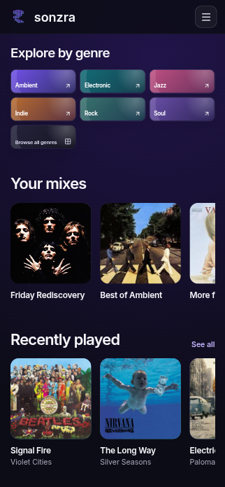
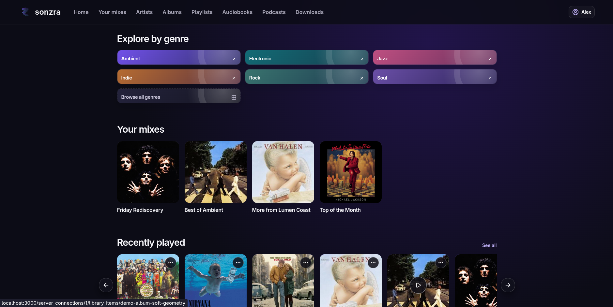
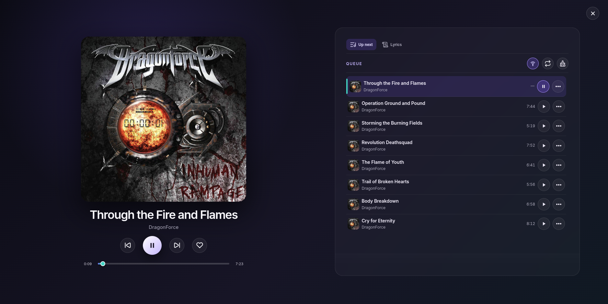
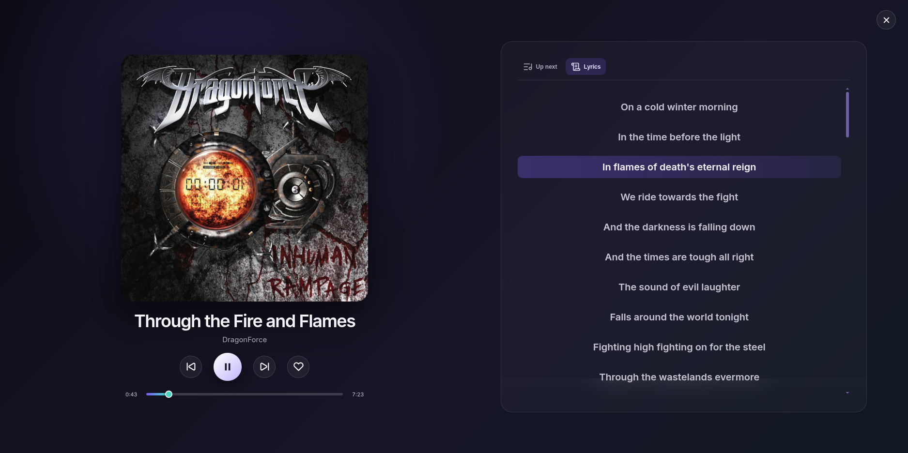
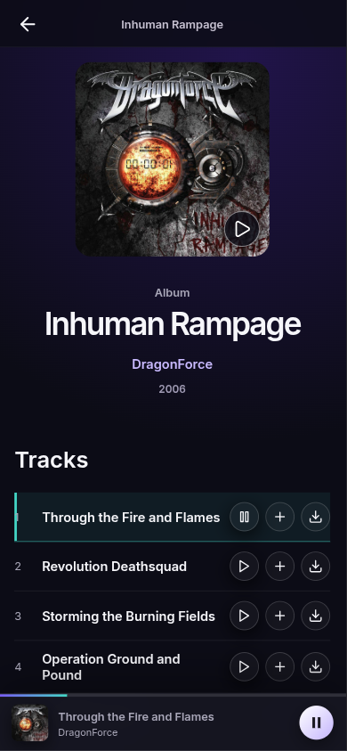

One listening home
Browse music, podcasts, audiobooks, artists, albums, genres, and playlists from your personal collection.
Private music for your own library
Explore, play, and rediscover the music you care about in one focused place.

Why Sonzra
Streaming services optimize for their catalogues. Sonzra puts your own music, listening history, and media server first without sending it to a third party.
Browse music, podcasts, audiobooks, artists, albums, genres, and playlists from your personal collection.
Saved mixes, radio, favourites, and hidden artists make recommendations feel like yours.
Download tracks and collections to supported browsers, with artwork and playback preserved locally.
Keep a persistent queue, resume long form audio, and follow time synced lyrics from LRC files.
In your library
Use Sonzra as a responsive web app or install it as a PWA. The same player stays with you while you browse, and offline downloads keep selected music available without a connection.




Install anywhere Docker runs
Persistent storage keeps Sonzra’s databases, encrypted credentials, jobs, and installation secret. Pending database migrations run automatically when the container starts.
Read the installation guideRequirements
.lrc files for synced lyrics